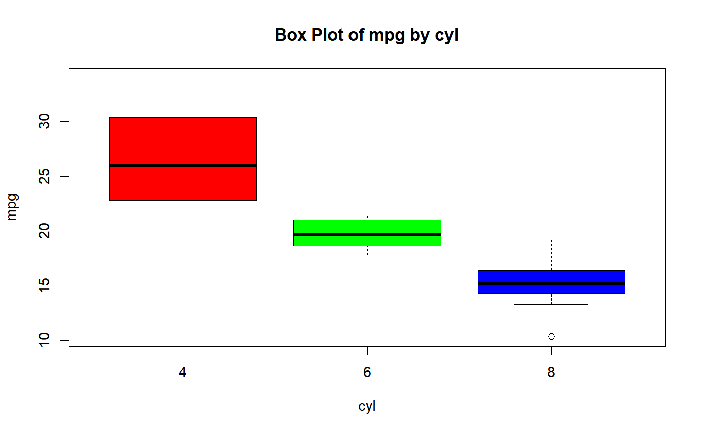

Descriptive statistics of a continuous variable for the different levels of
a categorical variable. boxplot.group_summary() creates boxplots of
the continuous variable for the different levels of the categorical variable.
ds_group_summary(data, gvar, cvar) # S3 method for ds_group_summary plot(x, ...)
| data | A |
|---|---|
| gvar | Column in |
| cvar | Column in |
| x | An object of the class |
| ... | Further arguments to be passed to or from methods. |
ds_group_summary() returns an object of class "ds_group_summary".
An object of class "ds_group_summary" is a list containing the
following components:
A data frame containing descriptive statistics for the different levels of the factor variable.
A tibble containing descriptive statistics for the different levels of the factor variable.
Data for boxplot method.
# ds_group summary ds_group_summary(mtcarz, cyl, mpg)#> mpg by cyl #> ----------------------------------------------------------------------------------------- #> | Statistic/Levels| 4| 6| 8| #> ----------------------------------------------------------------------------------------- #> | Obs| 11| 7| 14| #> | Minimum| 21.4| 17.8| 10.4| #> | Maximum| 33.9| 21.4| 19.2| #> | Mean| 26.66| 19.74| 15.1| #> | Median| 26| 19.7| 15.2| #> | Mode| 22.8| 21| 10.4| #> | Std. Deviation| 4.51| 1.45| 2.56| #> | Variance| 20.34| 2.11| 6.55| #> | Skewness| 0.35| -0.26| -0.46| #> | Kurtosis| -1.43| -1.83| 0.33| #> | Uncorrected SS| 8023.83| 2741.14| 3277.34| #> | Corrected SS| 203.39| 12.68| 85.2| #> | Coeff Variation| 16.91| 7.36| 16.95| #> | Std. Error Mean| 1.36| 0.55| 0.68| #> | Range| 12.5| 3.6| 8.8| #> | Interquartile Range| 7.6| 2.35| 1.85| #> -----------------------------------------------------------------------------------------# tibble k$tidy_stats#> # A tibble: 3 x 15 #> cyl length min max mean median mode sd variance skewness kurtosis #> <fct> <int> <dbl> <dbl> <dbl> <dbl> <dbl> <dbl> <dbl> <dbl> <dbl> #> 1 4 11 21.4 33.9 26.7 26 22.8 4.51 20.3 0.348 -1.43 #> 2 6 7 17.8 21.4 19.7 19.7 21 1.45 2.11 -0.259 -1.83 #> 3 8 14 10.4 19.2 15.1 15.2 10.4 2.56 6.55 -0.456 0.330 #> # ... with 4 more variables: coeff_var <dbl>, std_error <dbl>, range <dbl>, #> # iqr <dbl>